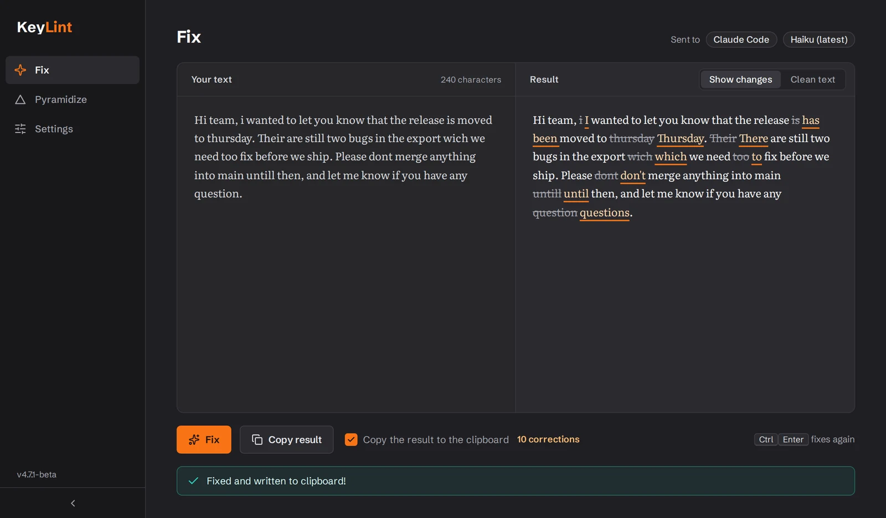
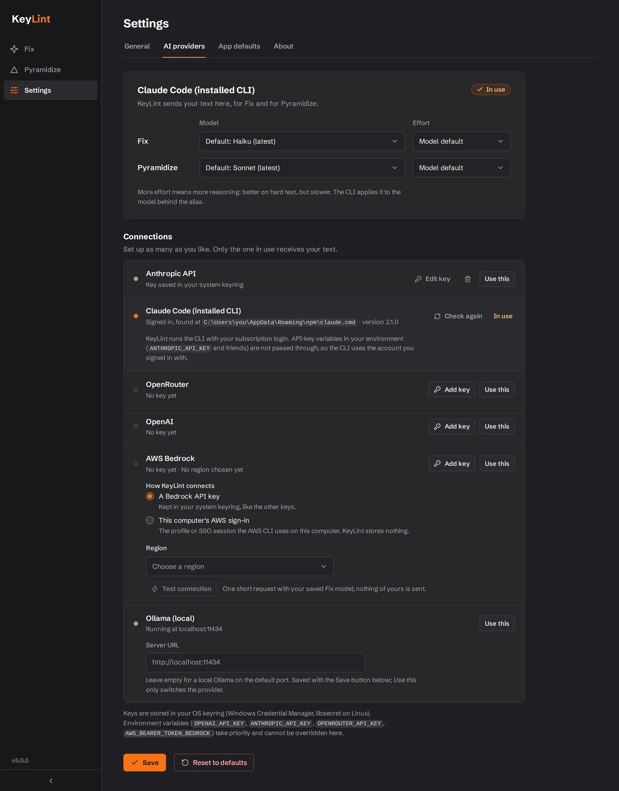

Select text
CTRL+G
Fixed
Perfect for emails, chat messages, documents, and social media posts. No more copy-pasting between tools — KeyLint fixes your text instantly, wherever you're typing.

Text fixes that stay out of your way
Silent Fix
Select text in any app and press Ctrl+G. The corrected text replaces your selection — no window, no interruption, no copy-paste loop.
Pyramidize
Hold Ctrl and tap G twice to turn rough notes into a clear email, chat message, memo, wiki page or slide outline — main point first. You pick the form, add an instruction if you want one, then copy the result as rich text or send it back.
Bring your own AI
An OpenAI or Anthropic API key, a local model through Ollama — or the Claude Code CLI you're already signed in to, with no key at all. How that works
Multilingual
Writes in English? Fixed in English. German? Fixed in German. KeyLint detects the language and corrects without translating.
System Tray
Lives in your system tray. Single-click for the menu, double-click to open. Uses minimal resources.
Private
Your text goes from your PC straight to the provider you picked — no KeyLint server in between. No telemetry, no cloud sync, no clipboard history stored, and logging is off by default. Besides your provider, KeyLint only contacts GitHub, to check for updates when it starts.
Right where you write
Two staged clips: the chat app and the mail client are mock-ups made for this page. The KeyLint parts are the real app, and the correction and the email are what KeyLint actually returned.
Silent Fix in a chat app
Select the message and press Ctrl+G. A dot on KeyLint's tray icon shows it is working, then the corrected text replaces your selection. Nothing else pops up.
Pyramidize from a mail client
Hold Ctrl and tap G twice on your notes. KeyLint opens with them, you pick the form, and it puts the point first. Copy the result as rich text and paste it back as a formatted email.
Use the AI you already have
An API key
OpenAI or Anthropic: paste your key once. It is kept in your operating system's keyring and only ever sent to the provider it belongs to.
No key: the Claude Code CLI
Already signed in to Claude Code on this PC? Then you need no API key. KeyLint runs your installed claude command, unmodified, so usage counts against your own Claude account. KeyLint never reads, stores or forwards your credentials and never asks you to log in: you sign in to Claude Code in your own terminal.
Local: Ollama
Run a model on your own machine with Ollama. With a local model, your text stays on your PC.

Claude Code is Anthropic's product. KeyLint is an independent project and is not affiliated with or endorsed by Anthropic.